class: title-slide count: false .logo-title[] ## ELECTENG 311 # Electronics Systems Design ### Buck and Boost Converters .TitleAuthor[Duleepa J Thrimawithana] --- layout: true name: template_slide .logo-slide[] .footer[[Duleepa J Thrimawithana](https://www.linkedin.com/in/duleepajt), Department of Electrical, Computer and Software Engineering (2026)] --- name: S1 # Learning Objectives - Energy storage elements - What is a Buck converter? - Converter topology and how it works - What is a Boost converter? - Converter topology and how it works - Steady-state analysis of an ideal Boost converter - What are the expected voltage and current waveforms - Deriving relation between circuit parameters and operating conditions - Example design - Determining the circuit parameters to meet a set of design specifications - Determining the operating conditions --- class: title-slide layout: false count: false .logo-title[] # Energy Storage Elements ### Inductors and Capacitors --- layout: true name: template_slide .logo-slide[] .footer[[Duleepa J Thrimawithana](https://www.linkedin.com/in/duleepajt), Department of Electrical, Computer and Software Engineering (2026)] --- name: S2 # Inductors .left-column[ - An inductor is an energy storage element - Energy is stored in the magnetic field that is generated when there is a current flowing through the windings of an inductor, \\[ E\_L = \frac{1}{2} L I\_L^2 \\] - To store energy we can connect an inductor across a DC voltage source and let the current ramp-up to a desired value since, \\[ I\_L = \frac{1}{L} \int\_{0}^{T\_{dur}} V\_{in} \, \mathrm{d}t = \frac{V\_{in}}{L} T\_{dur} \quad \because V\_{in} \textrm{ is constant} \\] - Assume initial current in L is 0A and S<sub>p</sub> turned-off at T<sub>dur</sub> - **I<sub>L</sub> cannot change abruptly** so D circulates I<sub>L</sub> when S<sub>p</sub> is off ] .right-column[ .center[<p>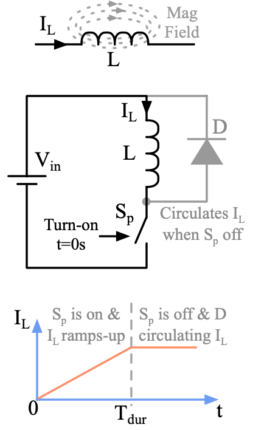</p>] ] --- name: S3 # Capacitors .left-column[ - A capacitor is an energy storage element - Energy is stored in the electric field that is generated when there is a voltage across the terminals of a capacitor, \\[ E\_C = \frac{1}{2} C V\_C^2 \\] - To store energy we can connect a capacitor across a DC current source and let the voltage ramp-up to a desired value since, \\[ V\_C = \frac{1}{C} \int\_{0}^{T\_{dur}} I\_{in} \, \mathrm{d}t = \frac{I\_{in}}{C} T\_{dur} \quad \because I\_{in} \textrm{ is constant} \\] - Assume initial voltage of C is 0V and S<sub>p</sub> turned-on at T<sub>dur</sub> - **V<sub>C</sub> cannot change abruptly** so D isolates V<sub>C</sub> when S<sub>p</sub> is off ] .right-column[ .center[<p>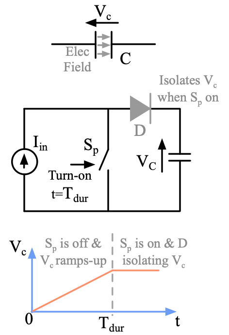</p>] ] --- class: title-slide layout: false count: false .logo-title[] # Buck Converters ### Operating Principles --- layout: true name: template_slide .logo-slide[] .footer[[Duleepa J Thrimawithana](https://www.linkedin.com/in/duleepajt), Department of Electrical, Computer and Software Engineering (2026)] --- name: S4 # Converter Topology .center[<p>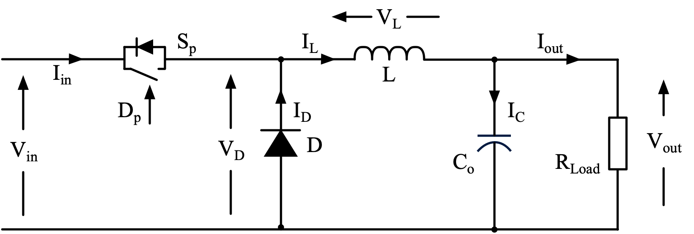</p>] - A Buck converter consists of a *switch (S<sub>p</sub>)*, *diode (D)*, *inductor (L)* and a *capacitor (C<sub>o</sub>)* - The switch is operated at a certain duty-cycle, D<sub>p</sub>, to control the output voltage, V<sub>out</sub> - When S<sub>p</sub> is on during D<sub>p</sub>T<sub>s</sub>, the input source, V<sub>in</sub>, is connected to L, causing I<sub>L</sub> to build-up thus storing energy in L and C<sub>o</sub> - When S<sub>p</sub> is off during (1-D<sub>p</sub>)T<sub>s</sub>, the energy stored in C<sub>o</sub> and L are released to the output - D makes sure I<sub>L</sub> path to flow when S<sub>p</sub> is off (freewheeling) - As we learnt in [PWM control](https://uoa-ee311.github.io/presentations/intro/presentation2.html#46), S<sub>p</sub> is operated at a fixed frequency f<sub>s</sub> and therefore T<sub>s</sub> = 1/f<sub>s</sub> --- name: S5 # Analysing the Buck Converter .center[<p>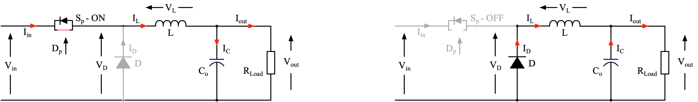</p>] - In an SMPS, such as this Buck converter, the switch, S<sub>p</sub>, can only be either on or off - We can draw two equivalent circuits, one for when S<sub>p</sub> is on and other for when S<sub>p</sub> is off - We will analyse the circuit assuming it has reached a steady-state - The average change in current through L and voltage across C<sub>o</sub> over one switching period is 0 - Thus, the average of V<sub>L</sub> over one switching period is also 0 and is referred to as the **volt-second balance** \\[ \int\_{0}^{T\_s} V\_L \, \mathrm{d}t = \int\_{0}^{DT\_s} (V\_{in} - V\_{out}) \, \mathrm{d}t + \int\_{DT\_s}^{T\_s} (-V\_{out}) \, \mathrm{d}t = 0\\] --- name: S12 # Steady-State Waveforms .center[<p>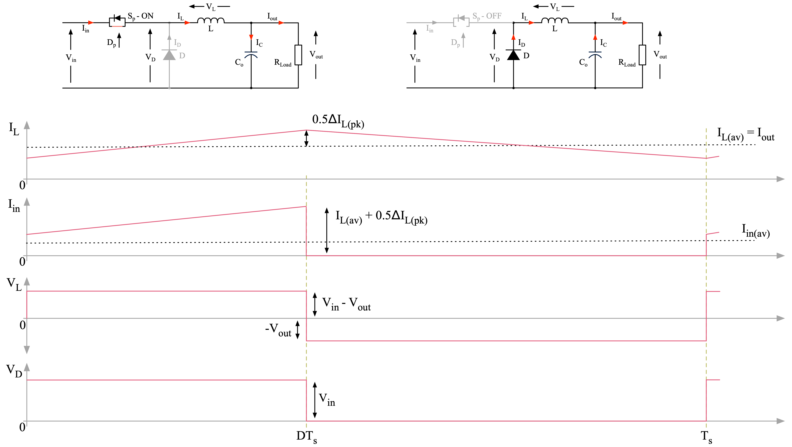</p>] --- name: S13 # Output Voltage - From the volt-second balance equation we can derive the relation between V<sub>out</sub> and D<sub>p</sub> \\[ \int\_{0}^{T\_s} V\_L \, \mathrm{d}t = (V\_{in} - V\_{out})DT\_s - V\_{out}(1-D)T\_s = 0\\] \\[ V\_{out} = V\_{in}D \\] - This is the same as the relation we derived in [introductory lecture](https://uoa-ee311.github.io/presentations/intro/presentation2.html#S53) for a buck converter - The same relation can be derived by equating the areas of the rectangles formed by the waveforms of V<sub>L</sub> when S<sub>p</sub> is on and off .center[<p>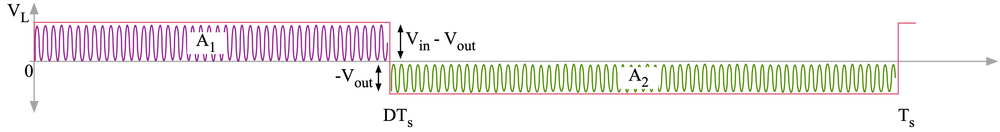</p>] --- name: S14 # Inductor Current - During DT<sub>s</sub> (i.e., when S<sub>p</sub> is on), current in L, which is the same as I<sub>in</sub>, ramps-up and reaches a peak of I<sub>L(pk)</sub> when S<sub>p</sub> is turning off - We can define the change in current through L during DT<sub>s</sub> as ΔI<sub>L</sub> and is given by \\[ \Delta I\_L = \frac{1}{L} \int\_{0}^{DT\_s} (V\_{in} - V\_{out}) \, \mathrm{d}t = \frac{V\_{in} - V\_{out}}{L} DT\_{s} \quad \because (V\_{out} - V\_{in}) \equiv \textrm{ constant} \\] - We can also define the same ΔI<sub>L</sub> during (1-D)T<sub>s</sub> (i.e., when S<sub>p</sub> is off) as \\[ \Delta I\_L = \frac{1}{L} \int\_{DT\_s}^{T\_s} (-V\_{out}) \, \mathrm{d}t = \frac{-V\_{out}}{L} (1-D)T\_{s} \\] - The average value of I<sub>L</sub> is the same as I<sub>out</sub> and is therefore \\[ I\_{L(av)} = I\_{out} = \frac{V\_{out}}{R\_{Load}} \quad \rightarrow \quad I\_{L(pk)} = I\_{L(av)} + \frac{\Delta I\_L}{2} = \frac{V\_{out}}{R\_{Load}} + \frac{V\_{in} - V\_{out}}{2L} DT\_{s} \\] --- name: S14 # Output Voltage Ripple .center[<p>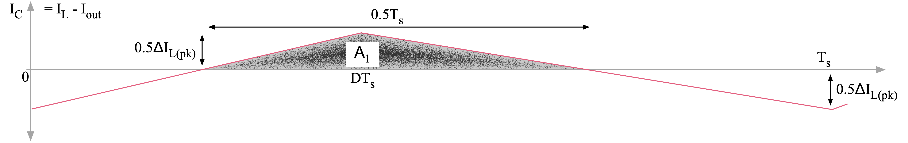</p>] - The output voltage ripple, ΔV<sub>out</sub>, is caused by the AC current, I<sub>C</sub>, flowing through C<sub>o</sub> - I<sub>C</sub> is the difference between I<sub>L</sub> and I<sub>out</sub> and is therefore an AC triangular waveform with 0 average - During positive half of I<sub>C</sub>, C<sub>o</sub> is charging and ΔV<sub>out</sub> is increasing - During negative half of I<sub>C</sub>, C<sub>o</sub> is discharging and ΔV<sub>out</sub> is decreasing - The area of under each triangle formed by I<sub>C</sub> is equal since we are analysing steady-state operation - Therefore, the length of each triangle is equal to T<sub>s</sub>/2 and the height of each triangle is ΔI<sub>L</sub>/2 giving us \\[ \Delta V\_{out} = \frac {1} {C\_o} \int\_{0}^{0.5T\_s} I\_C \, \mathrm{d}t = \frac {1} {C\_o} \frac{\Delta I\_L}{2} \times \frac{T\_s}{2} = \frac{\Delta I\_L T\_s}{4C\_o} \\] --- class: title-slide layout: false count: false .logo-title[] # Boost Converters ### Operating Principles --- layout: true name: template_slide .logo-slide[] .footer[[Duleepa J Thrimawithana](https://www.linkedin.com/in/duleepajt), Department of Electrical, Computer and Software Engineering (2026)] --- name: S4 # Converter Topology .center[<img src="img/Boost_Conv.png" height="180px">] - A Boost converter also consists of a *switch (S<sub>p</sub>)*, *diode (D)*, *inductor (L)* and a *capacitor (C<sub>o</sub>)* - The switch is operated at a certain duty-cycle, D<sub>p</sub>, to control the output voltage, V<sub>out</sub> - When S<sub>p</sub> is on during D<sub>p</sub>T<sub>s</sub>, the input source, V<sub>in</sub>, is connected across L, causing I<sub>L</sub> to build-up thus storing energy in L, while C<sub>o</sub> is supplying energy to the load - When S<sub>p</sub> is off during (1-D<sub>p</sub>)T<sub>s</sub>, the energy stored in L is released to C<sub>o</sub> and the output - D makes sure C<sub>o</sub> and is not shorted when S<sub>p</sub> is on while providing a freewheeling path when S<sub>p</sub> is off - As we learnt in [PWM control](https://uoa-ee311.github.io/presentations/intro/presentation2.html#46), S<sub>p</sub> is operated at a fixed frequency f<sub>s</sub> and therefore T<sub>s</sub> = 1/f<sub>s</sub> --- name: S5 # Analysing the Boost Converter .center[<p>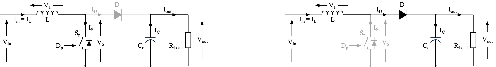</p>] - Similar to a Buck converter, the switch, S<sub>p</sub>, can only be either on or off - We can draw two equivalent circuits, one for when S<sub>p</sub> is on and other for when S<sub>p</sub> is off - We will analyse the circuit assuming it has reached a steady-state - The average change in current through L and voltage across C<sub>o</sub> over one switching period is 0 - We can write the **volt-second balance** across L as follows (assuming ideal diode) \\[ \int\_{0}^{T\_s} V\_L \, \mathrm{d}t = \int\_{0}^{DT\_s} (V\_{in}) \, \mathrm{d}t + \int\_{DT\_s}^{T\_s} (V\_{in} - V\_{out}) \, \mathrm{d}t = 0\\] --- name: S12 # Steady-State Waveforms .center[<p>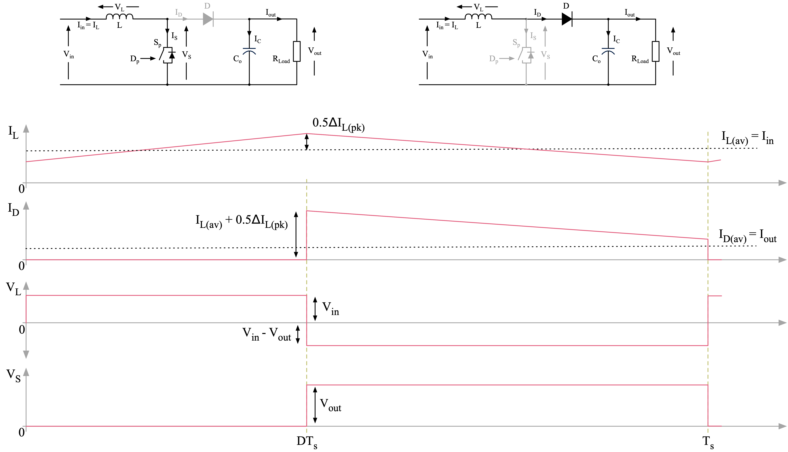</p>] --- name: S13 # Output Voltage - From the volt-second balance equation we can derive the relation between V<sub>out</sub> and D<sub>p</sub> \\[ \int\_{0}^{T\_s} V\_L \, \mathrm{d}t = V\_{in} DT\_s + (V\_{in} - V\_{out})(1-D)T\_s = 0\\] \\[ V\_{out} = \frac{V\_{in}}{1-D} \\] - This shows that V<sub>out</sub> is always greater than V<sub>in</sub> for a Boost converter, and in theory can reach infinity as D<sub>p</sub> approaches 1 - In practice, the maximum V<sub>out</sub> is limited by the voltage rating of the components and the losses - As with a Buck converter, the same relation can be derived by equating the areas of the rectangles formed by the waveforms of V<sub>L</sub> when S<sub>p</sub> is on and off --- name: S14 # Inductor Current - During DT<sub>s</sub> (i.e., when S<sub>p</sub> is on), current in L, which is the same as I<sub>in</sub>, ramps-up and reaches a peak of I<sub>L(pk)</sub> when S<sub>p</sub> is turning off - We can define the change in current through L during DT<sub>s</sub> as ΔI<sub>L</sub> and is given by \\[ \Delta I\_L = \frac{1}{L} \int\_{0}^{DT\_s} {V\_{in} } \, \mathrm{d}t = \frac{V\_{in} }{L} DT\_{s} \quad \because V\_{in} \equiv \textrm{ constant} \\] - We can also define the same ΔI<sub>L</sub> during (1-D)T<sub>s</sub> (i.e., when S<sub>p</sub> is off) as \\[ \Delta I\_L = \frac{1}{L} \int\_{DT\_s}^{T\_s} {(V\_{in}-V\_{out})} \, \mathrm{d}t = \frac{V\_{in} - V\_{out}}{L} (1-D)T\_{s} \\] - The average value of I<sub>L</sub> is the same as I<sub>in</sub> and is therefore \\[ I\_{L(av)} = I\_{in} \quad \rightarrow \quad I\_{L(pk)} = I\_{L(av)} + \frac{\Delta I\_L}{2} = I\_{in} + \frac{V\_{in} }{2L} DT\_{s} \\] --- name: S14 # Output Voltage Ripple .center[<p>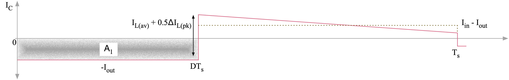</p>] - The output voltage ripple, ΔV<sub>out</sub>, is caused by the AC current, I<sub>C</sub>, flowing through C<sub>o</sub> - I<sub>C</sub> is the difference between I<sub>D</sub> and I<sub>out</sub> and can be approximated as an AC rectangular waveform with 0 average if ΔI<sub>L</sub> is assumed to be small - During positive half of I<sub>C</sub>, C<sub>o</sub> is charging and ΔV<sub>out</sub> is increasing - During negative half of I<sub>C</sub>, C<sub>o</sub> is discharging and ΔV<sub>out</sub> is decreasing - The area of under each square formed by I<sub>C</sub> is equal since we are analysing steady-state operation \\[ \Delta V\_{out} = \frac {1} {C\_o} \int\_{0}^{DT\_s} I\_C \, \mathrm{d}t = \frac {I\_{out}DT\_{s}} {C\_o} = \frac {I\_{out}} {f\_{s}C\_o} \frac{(V\_{out} - V\_{in})}{V\_{out}} \\] --- name: S14 # Critical Load (PI) .center[<p>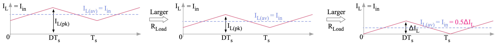</p>] - As R<sub>Load</sub> decreases, I<sub>in</sub> and therefore the I<sub>L(av)</sub> decreases - Critical load happens when I<sub>L(min)</sub> touches 0A at the end of the switching period - This is the boundary between continuous conduction mode (CCM) and discontinuous conduction mode (DCM) operation - We can derive the critical input current, and from this the critical load current as follows \\[ I\_{in-crit} = I\_{L-crit(av)} = \frac{\Delta I\_L}{2} \\] \\[ I\_{out} = I\_{D(av)} = (1-D) I\_{L(av)} \quad \rightarrow \quad I\_{out-crit} = (1-D) I\_{L-crit(av)} = (1-D) \frac{\Delta I\_L}{2} \\] --- name: S14 # Critical Load (PII) .center[] - From previous work ΔI<sub>L</sub> and V<sub>o</sub> were derived as \\[ \Delta I\_L = \frac{V\_{in} }{L} DT\_{s} \quad \text{and} \quad V\_{out} = \frac{V\_{in}}{1-D}\\] - Substituting for ΔI<sub>L</sub> we can write the critical load current as \\[ I\_{out-crit} = (1-D) \frac{V\_{in} DT\_{s}} {2L} = \frac{V\_{out} D (1-D)^2 T\_{s}} {2L} \quad \rightarrow \quad R\_{Load-crit} = \frac {V\_{out}}{I\_{out-crit}} = \frac{2L}{D (1-D)^2 T\_{s}}\\] --- name: S15 # Calculating Minimum L Required - We need to make sure that the inductor is large enough to keep the converter operating in CCM for the expected range of R<sub>Load</sub> - The minimum value of L depends on the critical R<sub>Load-crit</sub> that the converter is expected to operate at - We can calculate the minimum L required \\[ L\_{min} = \left[ R\_{Load-crit} \frac{D (1-D)^2 T\_{s}} {2} \right]\_{max} = \left[ {R\_{Load-crit} \frac{D (1-D)^2 } {2 f\_{s}} } \right] \_{max}\\] - The RHS of the L<sub>min</sub> is a maximum when D = 1/3 - This is calculated by diffeerentiating the expression for L<sub>min</sub> with respect to D and equating it to 0 - Since we made assumptions for this analysis, when designing your converter pick a L value that is higher than what you calculate --- name: S18 # Average Currents .left-column[ - Since ripple voltage at V<sub>out</sub> is negligible, I<sub>out</sub> is a constant DC value give by, \\[ I\_{out} = \frac{V\_{out}}{R\_{Load}} \\] - The average value of I<sub>in</sub> is, \\[ I\_{in(av)} = \frac{1}{T\_{s}} \int\_{0}^{T\_s} I\_{in} \, \mathrm{d}t = I\_{L(av)} \\] - The average value of I<sub>D</sub> should be the same as I<sub>out</sub> and is, \\[ I\_{D(av)} = \frac{1}{T\_{s}} \int\_{0}^{T\_s} I\_{D} \, \mathrm{d}t = (1-D)I\_{L(av)} = (1-D)I\_{in} = I\_{out} \\] ] .right-column[ .center[<p>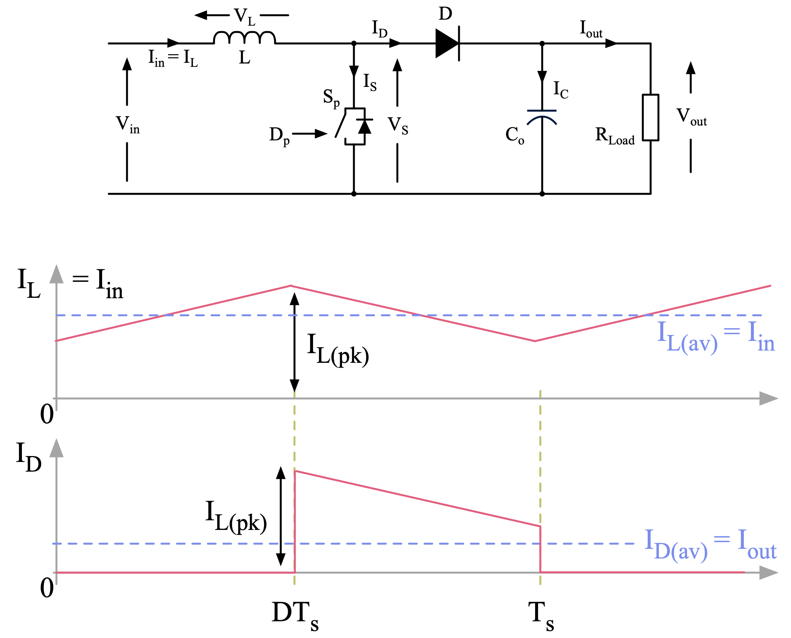</p>] ] --- name: S19 # RMS Inductor Current (PI) .center[<p>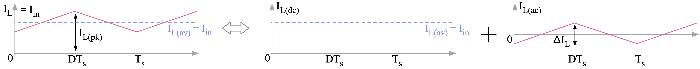</p>] - RMS currents dictate conduction loss in devices such as S<sub>p</sub> and L - To calculate RMS of I<sub>L</sub>, we can separate the waveform to a DC component and an AC component - Total RMS of I<sub>L</sub> is then the square root of the sum of the squares of the RMS of each component - I<sub>L(ac)</sub> it can be written as `\( -0.5 \Delta I_{L} + \Delta I_{L} t /DT_s \)` for `\( 0 \leq t \leq DT_s\)` and `\( 0.5 (1+D) \Delta I_{L} / (1-D) - \Delta I_{L} t / (1-D)T_s \)` for `\( DT_s \leq t \leq T_s\)` - RMS of I<sub>L</sub> is therefore give by, \\[ I\_{L(RMS)} = \sqrt { \frac{1}{T\_s} \int\_{0}^{T\_s} I^2\_{L(dc)} \, \mathrm{d}t + \frac{1}{T\_s} \int\_{0}^{T\_s} I^2\_{L(ac)} \, \mathrm{d}t } \\] --- name: S19 # RMS Inductor Current (PII) .center[] - Due to the shape of the I<sub>L(ac)</sub> waveform, the RMS of I<sub>L(ac)</sub> can be calculated as follows by considering the first half of the waveform \\[ \frac{1}{T\_s} \int\_{0}^{T\_s} I^2\_{L(ac)} \, \mathrm{d}t = \frac{1}{DT\_s} \int\_{0}^{DT\_s} \left[ -0.5\,\Delta I\_L + \Delta I\_L \frac{t}{DT\_s} \right]^2 \mathrm{d}t \\] \\[ \frac{1}{T\_s} \int\_{0}^{T\_s} I^2\_{L(ac)} \, \mathrm{d}t = \frac{1}{DT\_s} \int\_{0}^{DT\_s} \left[ \frac{\Delta I^2\_L}{4} - \frac{\Delta I^2\_L \, t}{DT\_s} + \frac{\Delta I^2\_L \, t^2}{D^2T\_s^2} \right] \mathrm{d}t = \frac{\Delta I^2\_L}{12} \\] --- name: S22 # Demo: A Conceptual Boost Converter .questions[ When V<sub>in</sub>=50V, L=100µH, f<sub>s</sub>=100kHz, D=0.5 and R<sub>load</sub>=100Ω, calculate I<sub>L(pk)</sub>, P<sub>out</sub>, V<sub>out</sub>, V<sub>S(max)</sub>, V<sub>D(max)</sub>, I<sub>in(av)</sub>, I<sub>D(av)</sub>, I<sub>in(RMS)</sub>, I<sub>D(RMS)</sub> and ΔV<sub>out</sub>. Show answers match simulation. Explore behavior when D and R<sub>load</sub> change. ] --- class: title-slide layout: false count: false .logo-title[] # How to Design a Boost Converter ### An Example --- layout: true name: template_slide .logo-slide[] .footer[[Duleepa J Thrimawithana](https://www.linkedin.com/in/duleepajt), Department of Electrical, Computer and Software Engineering (2021)] --- name: S23 # Design Specifications .left-column[ - Using what we learnt so far lets design a boost converter that meets the specifications listed in the table - In this design both the input and output voltages are fixed - In many cases you will need to cater for a range of input/output voltages - We are going to take η = 100% and design for continuous mode operation - To 'Design' this converter first we have to determine suitable values for L and C<sub>o</sub> - Then we analyse the voltage stress across S<sub>p</sub> and D, average and RMS current stresses as well as operating duty-cycles - We will do this analysis at P<sub>out(min)</sub> and P<sub>out(max)</sub> ] .right-column[ .center[<p>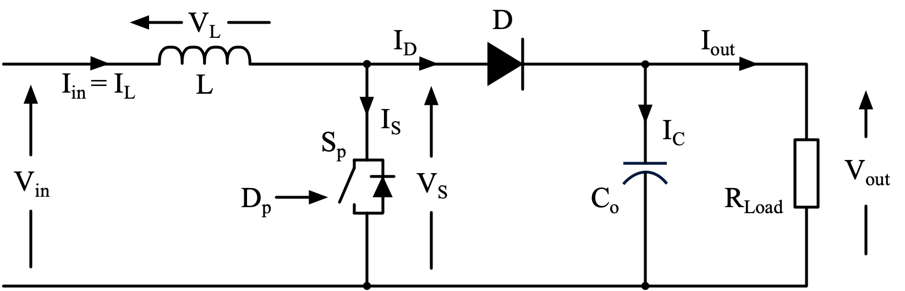</p>] <table class="tg" style="undefined;table-layout: fixed; width: 300px; margin-left:auto; margin-right:auto;"> <colgroup> <col style="width: 150px"> <col style="width: 150px"> </colgroup> <thead> <tr> <th class="tg-dzaw"><span style="color:white">Parameter</span></th> <th class="tg-dzaw"><span style="color:white">Specification</span></th> </tr> </thead> <tbody> <tr> <td class="tg-jayl">V<sub>in</sub></td> <td class="tg-jayl"> 12V </td> </tr> <tr> <td class="tg-sabo">V<sub>out</sub></td> <td class="tg-sabo"> 24V </td> </tr> <tr> <td class="tg-ig71"> P<sub>out</sub></td> <td class="tg-ig71"> 24W to 96W </td> </tr> <tr> <td class="tg-ig71">f<sub>s</sub></td> <td class="tg-ig71">100kHz</td> </tr> <tr> <td class="tg-sabo">ΔV<sub>out</sub></td> <td class="tg-sabo">0.1V</td> </tr> </tbody> </table> ] --- class: title-slide layout: false count: false .logo-title[] # Questions?